| ✅ | ✅ | ✅ | ✅ | ✅ | ✅ |
|---|
Motors without rotation sensors¶
Figure 1 Powered Up motors without rotation sensors. The arrows indicate the default positive direction.¶
- class DCMotor(port, positive_direction=Direction.CLOCKWISE)¶
LEGO® Powered Up motor without rotation sensors.
- Parameters:

- dc(duty)
Rotates the motor at a given duty cycle (also known as “power”).
- Parameters:
duty (Number, %) – The duty cycle (-100.0 to 100).
- stop()
Stops the motor and lets it spin freely.
The motor gradually stops due to friction.
- brake()
Passively brakes the motor.
The motor stops due to friction, plus the voltage that is generated while the motor is still moving.
Examples¶
Making a train drive forever¶
from pybricks.pupdevices import DCMotor
from pybricks.parameters import Port
from pybricks.tools import wait
# Initialize the motor.
train_motor = DCMotor(Port.A)
# Choose the "power" level for your train. Negative means reverse.
train_motor.dc(50)
# Keep doing nothing. The train just keeps going.
while True:
wait(1000)
Making the motor move back and forth¶
from pybricks.pupdevices import DCMotor
from pybricks.parameters import Port
from pybricks.tools import wait
# Initialize a motor without rotation sensors on port A.
example_motor = DCMotor(Port.A)
# Make the motor go clockwise (forward) at 70% duty cycle ("70% power").
example_motor.dc(70)
# Wait for three seconds.
wait(3000)
# Make the motor go counterclockwise (backward) at 70% duty cycle.
example_motor.dc(-70)
# Wait for three seconds.
wait(3000)
Changing the positive direction¶
from pybricks.pupdevices import DCMotor
from pybricks.parameters import Port, Direction
from pybricks.tools import wait
# Initialize a motor without rotation sensors on port A,
# with the positive direction as counterclockwise.
example_motor = DCMotor(Port.A, Direction.COUNTERCLOCKWISE)
# When we choose a positive duty cycle, the motor now goes counterclockwise.
example_motor.dc(70)
# This is useful when your (train) motor is mounted in reverse or upside down.
# By changing the positive direction, your script will be easier to read,
# because a positive value now makes your train/robot go forward.
# Wait for three seconds.
wait(3000)
Starting and stopping¶
from pybricks.pupdevices import DCMotor
from pybricks.parameters import Port
from pybricks.tools import wait
# Initialize a motor without rotation sensors on port A.
example_motor = DCMotor(Port.A)
# Start and stop 10 times.
for count in range(10):
print("Counter:", count)
example_motor.dc(70)
wait(1000)
example_motor.stop()
wait(1000)